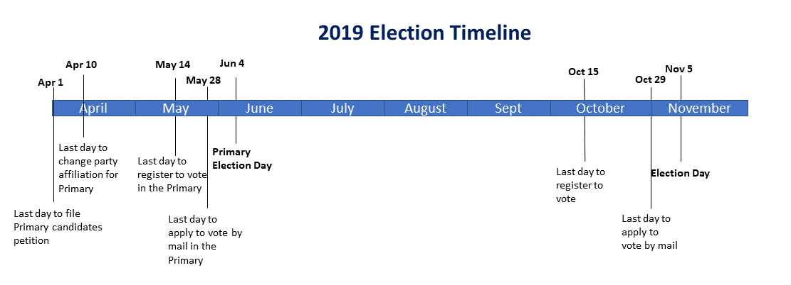

Voting Information
Home
NJ Congress
Registration
Vote By Mail
Change Party Affiliation
County Election Offices & Web Sites
The 2019 Primaries in NJ will be held on June 4th.
The registration deadline for the Primaries is May 14th.
You can change party affiliation until April 10th.
If you are registered as Unaffiliated you can vote in the Primaries declaring your party affiliation directly at the boot (if you like you can switch back to Unaffiliated afterwards).
The 2019 General Elections will be held on November 5th.
In NJ there isn't same day (voting day) registration, people need to register 20 days before the election day.
The registration deadline for the General Election is October 15th.

All the information below can be also found on the NJ State Election website
Registration
To register in New Jersey you must be:
- A United States citizen
- At least 17 years old, and understand that I may not vote until reaching the age of 18
- A resident of the county for 30 days before the election
- You are NOT currently serving a sentence, probation or parole because of a felony conviction
- The registrant must complete a Voter Registration Application
Mail or deliver the Voter Registration Application to the County Commissioner of Registration or Superintendent of Elections for your county
To find out if you are already registered to vote, or to check on the status of a new registration visit
Registration
To find out your polling location please visit Polling Locator
Essex County
Hunterdon County
Morris County
Somerset County
In addition to the state voting requirements, you must be a resident of your present address for at least 30 days before the election
and must not be adjudged mentally incompetent to vote in Somerset County.
Union County
Warren County
Statewide Registration Application Forms
Registration forms are also available at Division of Motor Vehicle offices. You can also register to vote at the same time you are applying for assistance or service at the following agencies:
- NJ Medical Assistance & Health Services Program
- WIC (Supplemental Food Program for Women, Infant & Children)
- Work First NJ Programs
- Division of Developmental Disabilities
- Office of Disability Services - Department of Human Services - Public Offices
- Armed Forces of the United States Recruitment Offices
- Division of Vocational Rehabilitation Services - Department of Labor
- Commission of the Blind & Visually Impaired
- County Welfare Agency or County Board of Social Services
Vote By Mail
There is no need of a reason to request a "Vote By Mail" (VBM) ballot. Although many people like the "emotion" to enter the poll, VBM has the
great benefit to allow you to vote in span of several weeks (usually 45 days) before election day. You don't need to miss a working day or worry about
a slow commute or other unforseable delays.
Every county resident qualified and registered voter can request to receive a "Vote By Mail" ballot up to 7 days before election day sending the request application to the County Clerk's Office (see below for offices).
Some county office accept VBM request via phone too.
The voter may also apply in person to the Clerk's office, or by authorized messenger, on any day up to 3:00 P.M. the day before an election.
Any voter may complete the bottom portion of the application and designate a messenger. A messenger may bring a Mail-In Ballot Application completed by the voter to the County Clerk’s office and pick up a Mail-In Ballot for that voter. The messenger will need to sign the application in front of the County Clerk or designee and show photo ID in order to pick up the ballot. The messenger must deliver the Mail-In Ballot directly to the voter.
The County Clerk cannot accept faxed or e-mailed copies of the Vote by Mail Application (unless you are an overseas voter, see below), since an original signature is required.
Your ballot will be mailed on or after the 45th day prior to Election Day. It contains all the instructions to complete and deliver it.
If you have applied for an Mail-in Ballot and have decided to instead vote at the polls, you may be able to vote by provisional ballot.
Your sealed Mail-In Ballot must be received by the County Board of Elections before the close of polls on Election Day.
Vote by Mail is also available for "Service Members" and overseas citizens.
You may apply for a Mail-In Ballot if you are New Jersey resident who is a member of the Uniformed Services, Merchant Marine, Commissioned Corps of the Public Health Service, the National Oceanic and Atmospheric Administration.
"Uniformed Services" include members of the United States Armed Forces (Navy, Army, Air Force, Marine Corps and Coast Guard). Family members of a military voter are also entitled to vote by mail.
If you are a Military voter currently residing within the United States, please complete a Mail-In Ballot Application and mark the appropriate choice in the Special Status box on the application.
If you are a Military voter currently residing outside the United States or a US citizens leaving abroad, please complete the Federal Post Card Application (FPCA) to receive your Mail-In Ballot. The FPCA acts as both a registration and absentee ballot request form.
Vote By Mail Applications
Essex County Vote By Mail Application - English
Essex County Vote By Mail Application - Espanol
Hunterdon County Vote By Mail Application - English
Hunterdon County Vote By Mail Application - Espanol
Morris County Vote By Mail Application - English
Morris County Vote By Mail Application - Espanol
Somerset County Vote By Mail Application - English
Somerset County Vote By Mail Application - Espanol
Union County Vote By Mail Application - English
Union County Vote By Mail Application - Espanol
Warren County Vote By Mail Application - English
Warren County Vote By Mail Application - Espanol
Union County VBM video
County Election Offices & Web Sites
Essex County
County Clerk
Christopher J. Durkin
Address: Hall of Records, 465 Dr. Martin Luther King Jr. Boulevard, Room 247, Newark, NJ 07102
(For regular mail delivery use P.O. Box 690, Newark, NJ 07101-0690)
Office Hours: 8:30am-4:00pm, 973-621-4921 (FAX) 973-621-2527/2537
Website: www.essexclerk.com
Superintendent of Elections/Commissioner of Registration
Edna Y. Baugh
Address: Superintendent of Elections, Hall of Records, 465 Dr. Martin Luther King, Jr. Boulevard, Fourth Floor, Room 417 A, Newark, NJ 07102
Office Hours: 8:30am-4:00pm, 973-621-5061 (FAX) 973-621-6464
Website:
Board of Elections
Address: Hall of Records, 465 Dr. Martin Luther King, Jr. Boulevard, Fourth Floor, Room 411, Newark, NJ 07102
Office Hours: 9:00am-4:00pm, 973-621-5071 (FAX) 973-621-2540
Website: essexboardofelections.com
Hunterdon County
County Clerk
Mary H. Melfi
Address: Hall of Records, 71 Main Street, P.O. Box 2900, Flemington, NJ 08822-2900
Office Hours: 8:30am-4:30pm, 908-788-1214 (FAX) 908-782-4068
Website: www.co.hunterdon.nj.us/countyclerk.htm
Commissioner of Registration
Stephanie Pierce
Address: Bldg. 3A, 3rd Floor, 71 Main Street, P.O. Box 2900, Flemington, NJ 08822-9952
Office Hours: 8:30am-4:30pm, 908-788-1190 (FAX) 908-806-4686
Website: www.co.hunterdon.nj.us/depts/elect/electbd.htm
Board of Elections
Address: Permanent Registration Office, 71 Main Street, Bldg. 3A, 3rd Floor, P.O. Box 2900, Flemington, NJ 08822
Office Hours: 8:30am-4:30pm, 908-788-1190 (FAX) 908-806-4686
Website: www.co.hunterdon.nj.us/depts/elect/electbd.htm
Morris County
County Clerk
Ann F. Grossi
Address: Administration & Records Building, 10 Court Street, P.O. Box 315, Morristown, NJ 07963-0315
Office Hours: 8:00am-4:30pm, 973-285-6059 (FAX) 973-285-5233
Website: www.morriscountyclerk.org
Commissioner of Registration
Dale Kramer, Chief Deputy
Address: Administration & Records Building, 10 Court Street, 2nd Floor, P.O. Box 900, Morristown, NJ 07963-0900
Office Hours: 8:30am-4:30pm, 973-285-6715 (FAX) 973-285-5208
Website: elections.morriscountynj.gov
Board of Elections
Address: Administration & Records Building, 10 Court Street, 2nd Floor, P.O. Box 900, Morristown, NJ 07963-0900
Office Hours: 8:00am-4:30pm, 973-285-8350 (FAX) 973-285-8412
Somerset County
County Clerk
Steve Peter
Address: 20 Grove Street, P.O. Box 3000, Somerville, NJ 08876-1262
Office Hours: 8:15am-4:00pm, 908-231-7013 (FAX) 908-253-8853
Website: www.co.somerset.nj.us/government/elected-officials/county-clerk
Commissioner of Registration
Jerry L. Midgette, Esq., Administrator
Address: 20 Grove Street, P.O. Box 3000, Somerville, NJ 08876-9977
Office Hours: 8:30am-4:30pm, 908-231-7084 (FAX) 908-231-9465
Website: www.co.somerset.nj.us/elections
Board of Elections
Address: Administration Building, 20 Grove Street, P.O. Box 3000, Somerville, NJ 08876-1262
Office Hours: 8:30am-4:00pm, 908-231-7084 (FAX) 908-231-9465
Website: www.co.somerset.nj.us/elections
Union County
Website with great information and details UnionCountyVotes
County Clerk
Joanne Rajoppi
Address: 2 Broad Street, Room 113, Elizabeth, NJ 07201-2299
Office Hours: 8:30am-4:30pm, 908-527-4996/4997 (FAX) 908-558-2589
Website: ucnj.org/county-clerk
Commissioner of Registration
Clara T. Harelik
Address: 271 North Broad Street, Elizabeth, NJ 07208
Office Hours: 8:00am-4:00pm, 908-527-4123 (FAX) 908-527-4127
Website: ucnj.org/board-of-elections/
Board of Elections
Address: 271 North Broad Street, Elizabeth, NJ 07208
Office Hours: 8:00am-4:00pm, 908-527-4123 (FAX) 908-527-4127
Website: ucnj.org/board-of-elections/
Warren County
County Clerk
Holly Mackey
Address: Court House, 413 Second Street, Belvidere, NJ 07823-1500
Office Hours: 8:00am-4:30pm, 908-475-6211 (FAX) 908-475-6208
Website: www.co.warren.nj.us/countyclerk
Commissioner of Registration
Harold Brown
Address: Cummins Building, 202 Mansfield Street, Belvidere, NJ 07823
Office Hours: Office Hours: 8:00am-4:30pm, 908-475-6313 (FAX) 908-475-6221
Website: www.co.warren.nj.us/Election.html
Board of Elections
Address: Cummins Building, 202 Mansfield Street, Belvidere, NJ 07823
Office Hours: 8:00am-4:30pm, 908-475-6313 (FAX) 908-475-6221
Website: www.co.warren.nj.us/Election.html
Change Party Affiliation
This is really only relevant to regard to vote in the Primary Elections (you can vote only for your party candidates).
For General Elections you party affiliation doesn't have any relevance.
Party affiliation at any time is however interesting for speculations on voter turnout and most likely voting choices.
A registered voter currently affiliated with a political party who wishes to change their party affiliation must file a Political Party Affiliation Declaration Form 55 days before a Primary Election.
A registered voter currently not affiliated with a political party may declare their party affiliation up to and including Primary Election day.
You can print and complete the Political Party Affiliation Declaration Form and mail or deliver to the Commissioner of Registration in your county or you can also file it with your municipal clerk. These forms are also available at your local Commissioner of Registration Office.
The Commissioner of Registration cannot accept faxed copies or an electronic transmission of Party Affiliation Declaration Forms, since an original signature is required.